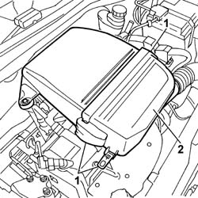
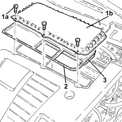
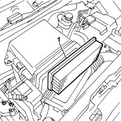

1048A14 air cleaner filtering element - replace.
- Path
- Procedures > 10 ENGINE UNIT > 1048 ENGINE AIR SUPPLY CIRCUIT > 1048A vacuum air circuit > 1048A14 air cleaner filtering element - replace.
- Kind
- repair procedure (removal / refitting; the operation number is the code)
- Applies to
- all engines; all production periods
- Interactive page
- https://sloeber94.github.io/elrnDB-fPnd/en/#/2752487
Applies to: engines: 1.1; all production periods
 Removing
Removing
 Refitting
Refitting1. Open the air filter cover fastenings.
2. Remove the air filter cover.

Applies to: engines: 1.2 8v; all production periods
Removing
Refitting1. Open the air filter cover fastenings.
2. Remove the air filter cover.
Applies to: engines: 1.3 JTD 16v; all production periods
Removing
Refitting1. Undo the bolts (1a) and remove the air filter cover (1b).
2. Remove the gasket
3. Remove the air filter filter element.

Applies to: engines: 1.1; all production periods
1. Remove the filter element.

Applies to: engines: 1.2 8v; all production periods
1. Remove the filter element.
Applies to: engines: 1.3 JTD 16v; all production periods
Refitting
RemovingFit a new air filter filter element in place.
Fit the gasket in place.
Fit the the air filter cover in place and fix it using the bolts.
Applies to: engines: 1.1; all production periods
Refitting
RemovingFit a new filter element.
Fit the air filter cover and close the fastening clip for the cover on the casing.
Applies to: engines: 1.2 8v; all production periods
Refitting
RemovingFit a new filter element.
Fit the air filter cover and close the fastening clip for the cover on the casing.